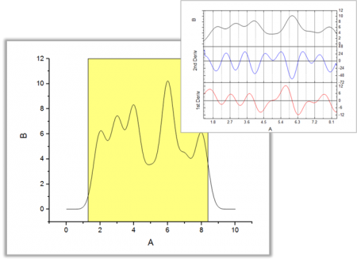
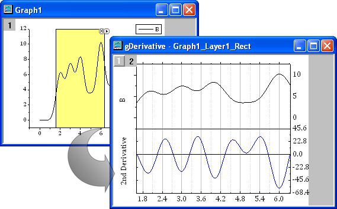

微分ガジェット
Gadget-Differentiate
概要
微分ガジェットは、ROI（Region of Interest）範囲内の微分曲線を計算して表示する便利なツールです。
- 
このガジェットで、次のことができます。
- 微分するデータ領域を移動してサイズ変更
- 微分階数を指定
- 微分曲線をデータのグラフとともに表示
- ワークシートに微分曲線を出力
微分ガジェットを使うには
このツールを使うには、グラフがアクティブなときに、メニューからガジェット：微分を選びます。
ダイアログ設定
このダイアログは、メニューからガジェット：微分を選ぶか、ROIフライアウトメニューから設定を選選ぶと開くことができます。
| ROIボックス
|
ツール名を表示する
- ROIの上部付近にツールの名前を表示するかどうか指定します。
塗り色
- ROIボックスの塗り色を指定します。
微分曲線の色
- 微分曲線の色を指定します。
|
| 導関数
|
導関数を指定します。このオプションの他に、ROIツールのフライアウトメニューから1次微分曲線と2次微分曲線を表示することもできます。
|
| スムージング
|
Savitzky-Golayスムージング
- 微分係数を見つけるために各々の点のまわりでローカル多項式の回帰を実行するSavitzky-Golayスムージングを適用するか指定してします。
多項式次数
- Savitzky-Golayスムージングのための多項式の次数を指定します。この値は微分階数より小さくすることはできません。
ウィンドウのポイント数
- Savitzky-Golayスムージングで使用される移動ウィンドウでのポイント数を指定します。
|
フライアウトメニュー
ROIボックスの右上角にある三角形のボタン をクリックして、以下のオプションを含んだフライアウトメニューを開きます。
をクリックして、以下のオプションを含んだフライアウトメニューを開きます。
| ROIを削除して微分グラフを残す
|
このオプションは微分ツールを閉じ、微分曲線ウィンドウは保持します。
|
| ROIを閉じても微分グラフを残す
|
ROIの右上隅にある「x」ボタンをクリックしてツールを閉じたとき、微分曲線ウィンドウを削除するかどうかを指定します。
|
| データ変更
|
フィットデータ／プロットを変更します。デフォルトでは、現在のレイヤ内にあるすべてのプロットが選択されます。
- 全てのプロットについているチェックを外すと、全て未選択になります。
- 各プロットにチェックを付けて、そのプロットを選択します。
- 選択...または、詳細...をクリックするとプロットを選択ダイアログが開くので、複数のプロットを選択します。
- 自動が有効になっている場合、プロットの選択は、グラフウィンドウまたはオブジェクトマネージャでプロットをクリックすることによって可能です。
|
| プロット群の最大範囲に拡大する
|
ROI範囲を全プロット範囲に拡大します。
|
| 一次/二次微分を表示
|
一次または二次微分曲線を表示します。
|
| テーマに名前を付けて保存
|
現在の設定を保存します。
|
| テーマのロード
|
テーマ設定をロードします。
|
| 設定
|
微分設定ダイアログを開きます。
|
例
- 新しいワークシートを作成し、<Originのインストールフォルダ>\Samples\Spectroscopy\ の HiddenPeaks.datファイルをインポートします。 列Bを選択して、2Dグラフツールバーの
 ボタンをクリックし、折れ線グラフを作図します。
ボタンをクリックし、折れ線グラフを作図します。
- メニューからガジェット：微分を選択し、ダイアログボックスを開きます。微分階級に2 を選択します。他は初期設定のまま、OKボタンをクリックします。 黄色のROI範囲がプロット上に追加され、元データと微分曲線を表示するプレビューウィンドウが作成されます。
- 
- ROIを移動し、微分曲線がどのように変わるか確認します。